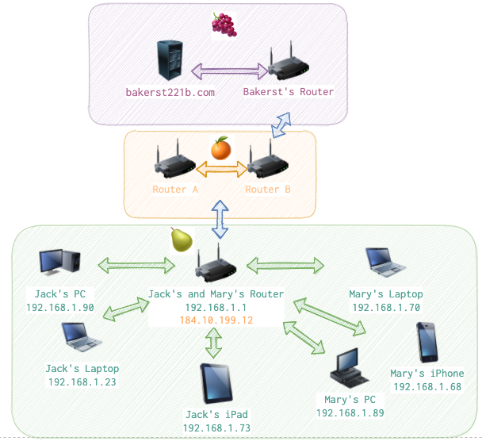

This article is about ARP protocol. It’s used to map IP addresses to physical (MAC) addresses. Devices usually keep an ARP cache not to send ARP request continuously. Also there are certain attacks on ARP that exploit its internals.
Analogy
If we were to compare a device to a human body, we could say that CPU is a brain 🧠, battery power is a heart ♥️, camera is an eye 👁 and NIC is a mouth 👄 (yeah, let’s forget about microphones 🎤 for a while).
What’s a NIC? It stands for (Network Interface Controller) and each device which was designed to connect to the Internet is supposed to have one. This device inside a device is responsible for establishing connection to other devices. It has MAC (Media Access Control) which is basically six groups of two hexadecimal digits and is assigned to each NIC during manufacturing. This address is the heart of Ethernet II (Data link layer of TCP/IP stack). The first part of this number is unique to the vendor, the second one is supposed to be unique to a device (you can imagine how feasible it is given the amount of devices out there). Also, weirdly enough, even though MAC identifies NIC (which is hardware) and one would expect it to be immutable, it can be changed programatically (see here an example for Windows).
To get a packet to another computer one needs to know the following things:
- IP address (its own and the recipient’s). Identified someone’s network on the Internet.
- MAC address (its own and the recipient’s). Identifies the machine.
- TCP or UDP port number (its own and the recipient’s). Identifies the service talking.
- Data to send. If I need to expand on this, I probably need to stop mainataining this website. 😠
Since IP, port and data are out of the intended scope of this article, I’ll leave it unexplained here (see corresponding articles in the section and also an overview of TCP/IP stack). For now I am devoting my full attention to MAC addresses and how PCs get them when composing a packet for another PC.

Get a microscope
Devices that talk in terms of MACs are: hubs, repeaters and switches. The thing you have at home to access the internet is most likely not a switch, but a router (which works on higher levels).
arp -a
arp -d
netdiscover